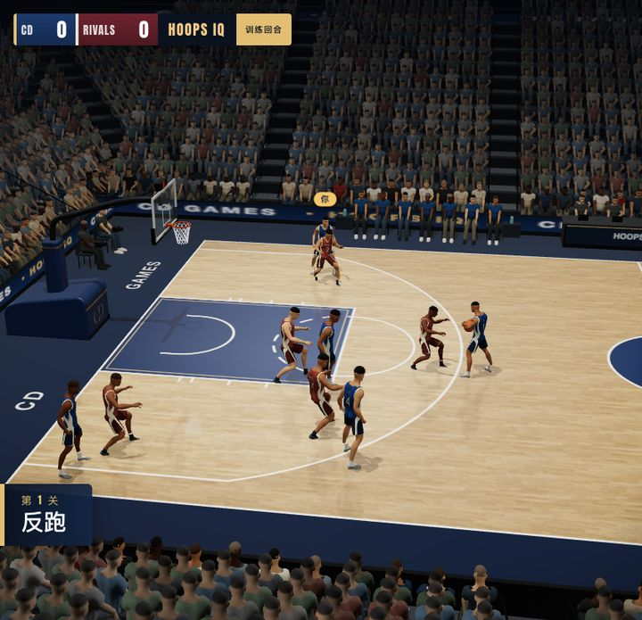
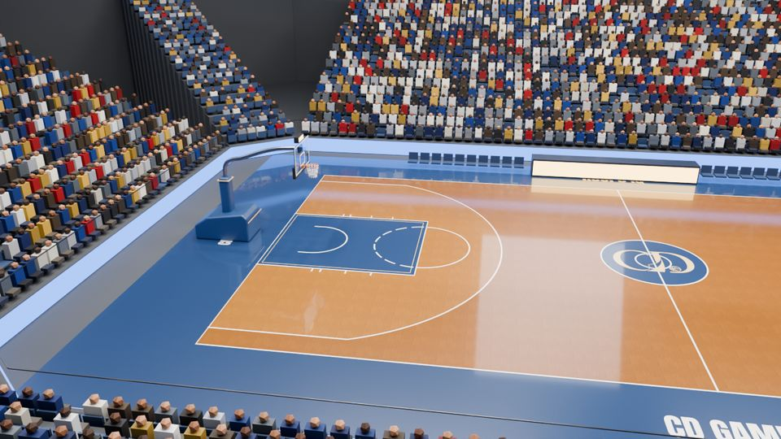

Crypto.com Arena · 湖人 2022
地板观众顶—
- 地板亮度 Y
- 0.74
- 色相 / 饱和
- 43° / 0.29
- 地板 ÷ 观众
- 13.4×
- 地板 ÷ 天花板
- 43×
Commons · Troutfarm27 · CC BY-SA 4.0
CD Games · Hoops IQ · 2026-11-22
拿 4 个头部 NBA 球馆的比赛现场照片，按区域量颜色和亮度，再用同样的方法量我们的游戏画面和 Blender 预览。照片是手机自动曝光，所以看比例（地板比别的亮几倍），不看绝对值。
结论：头部球馆的共同点是「舞台」：浅色、接近奶白的枫木地板是全场最亮的东西，比观众亮 5–13 倍，比天花板亮 15–40 倍，外圈是饱和的深海军蓝。我们两边都没做到，而且错得方向相反：游戏里观众压得太黑、地板不够亮、外圈发灰；Blender 预览观众和天花板太亮、木头偏粉橙、看不出木纹。
| 项目 | 头部球馆 | 游戏现状 | Blender a03 |
|---|---|---|---|
| 地板亮度 Y | 0.70–0.74（接近奶白） | 0.48 · 暗半档 | 0.53 |
| 木头颜色（色相 / 饱和） | 36–43° / 0.16–0.29 暖黄 | 36° / 0.28 ✓ | 19° / 0.17 偏粉橙 |
| 地板 ÷ 观众 | 5–13 倍（取 8） | 20.8 · 观众太黑 | 2.7 · 观众太亮 |
| 地板 ÷ 外圈 | ≈ 8 倍，深海军蓝 | 3.4 · 外圈发灰 | 3.7 · 蓝得太亮 |
| 地板 ÷ 天花板 | 15–40 倍，几乎全黑 | 画面里看不到 | 7.1 · 天花板太亮 |
| 木纹可见度（cv） | ≈ 0.1，木条 5.7 cm 看得见 | 0.16 | 0.02 · 看不出 |


量法：每张图手选矩形区域，求平均 sRGB、线性亮度 Y（0–1）、饱和度、色相；木纹用亮度变异系数 cv。样本只有 4 个球馆，区域人工框选，数是方向性的。NBA 官方照度/色温规范查不到；公开代理值：NCAA 最低 3600 K、CRI ≥ 65，NBA 发展联盟球场 LED 改造后约 60 fc。另参考 NBA 2K26 官方 Presentation 页（灯光强度与调色重做、地板着色器与木纹、观众模型翻倍和道具、顶部聚光、薄雾）。


.jpg){kind=link}